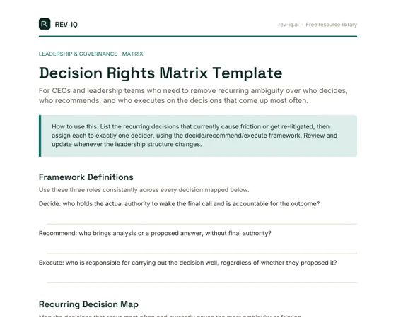

The Confusion That Looks Like a Personality Problem But Isn’t
A recurring pattern in scaling technology businesses: two capable, well-intentioned senior leaders end up in a tense standoff over a decision, and the CEO reads it as a personality clash or territorial behaviour. Almost always, the actual problem is structural: nobody ever defined who had the authority to decide, who needed to be consulted first, and who was simply expected to execute once the call was made. Two competent people, each reasonably assuming the decision was theirs, will produce exactly this friction every time, regardless of how well they otherwise get along.
This is more corrosive than it looks from the outside. Every time a decision gets made and then quietly relitigated or reversed by someone who felt bypassed, the organisation learns a lesson it didn't intend to teach: that decisions aren't really final, and that the way to win is to escalate loudly or wait the other person out rather than execute. That lesson, learned enough times, produces a leadership team that moves slowly not because the people are slow, but because nobody trusts that a decision, once made, will stick.
Why This Gets Worse as the Org Chart Fills In
In a small team, decision rights are usually implicit and mostly fine, because there are few enough people that ambiguity resolves itself through proximity: everyone's in the same room or the same Slack thread, and the CEO is close enough to referee informally. The problem compounds as a business adds layers: a VP hired to own a function discovers that decisions in their domain are still being made two levels up, or a newly promoted lead makes a call only to find a peer overriding it after the fact, because nobody updated the informal map of who decides what.
Technology businesses feel this particularly hard around anything cross-functional (pricing, roadmap trade-offs, customer escalations, hiring above a certain level) because these decisions naturally touch multiple functions with no obvious single owner. Without an explicit map, the default owner becomes whoever is most senior, most persistent, or most recently burned by getting it wrong, none of which is a durable basis for an organisation to run on.
The Distinction That Actually Matters: Decide, Recommend, Execute
Most decision-rights confusion collapses once a business separates three distinct roles that get blurred together in everyday language. Someone decides, meaning they have the actual authority to make the call and are accountable for the outcome. Others recommend, meaning they bring analysis, expertise, or a proposed answer, without holding the authority to finalise it. Others execute, meaning they are responsible for carrying out the decision well, regardless of whether they agreed with it. Confusion happens almost entirely when these three roles are silently assumed rather than explicitly assigned, and two people both believe they hold the same one.
This distinction also does something valuable for morale that isn't obvious at first: it makes 'losing' a decision much less personal. A leader who recommended a direction and had it decided differently by someone with clear decision rights has been overruled by design, not undermined personally. That is a fundamentally different experience, and a much healthier one for a leadership team's long-term cohesion, than an ambiguous power struggle with no agreed rules.
Where the Matrix Earns Its Keep: The Decisions That Actually Recur
A decision rights matrix isn't valuable as a comprehensive map of every possible decision. That would be unusable and quickly out of date. It earns its keep on the twenty or so decisions that recur constantly and cause the most friction when ambiguous: pricing exceptions, roadmap prioritisation, hiring above a certain level, customer commitments outside standard terms, budget reallocation, and similar cross-functional calls. Getting these explicit removes the majority of the day-to-day friction, because these are precisely the decisions leadership teams re-fight repeatedly without one.
The matrix also has a quieter but equally important function: it protects the CEO's time. Every decision that should sit with a function leader but instead escalates to the CEO by default is a decision the CEO didn't need to make and a leader who wasn't allowed to grow into owning it. A clear matrix is as much a delegation tool as a governance tool: it's what actually lets a CEO stop being the bottleneck without losing control of what genuinely matters.
Making It Explicit Rather Than Assumed
Use the Decision Rights Matrix Template to put this on paper for the decisions that recur and currently cause friction. The value isn't in the document sitting in a drive. It's in the conversation it forces when two leaders discover they've been assuming different things about who owns a given call, and in the reference point it becomes the next time that decision comes up.
Revisit the matrix deliberately whenever the org chart changes meaningfully (a new VP hire, a restructuring, a new function) because decision rights that made sense for a five-person leadership team rarely still make sense unchanged for a team of ten. Treating the matrix as a living document, reviewed at defined intervals rather than written once and forgotten, is what keeps it useful rather than becoming one more artifact nobody consults.
- Most leadership friction that looks like a personality clash is actually unresolved ambiguity about who had the authority to decide.
- Every reversed or relitigated decision teaches an organisation that decisions aren't final, which slows the whole team down over time.
- Separating decide, recommend, and execute removes most of the confusion, because it makes clear who holds authority versus who contributes input.
- A decision rights matrix is most valuable applied to the 15-20 recurring, cross-functional decisions that cause the most friction, not as an exhaustive catalogue.
- A clear decision rights matrix is a delegation tool as much as a governance one: it's what lets a CEO stop being the default decision-maker for everything.
Decision Rights Matrix Template
For CEOs and leadership teams who need to remove recurring ambiguity over who decides, who recommends, and who executes on the decisions that come up most often.

- Framework Definitions
- Recurring Decision Map
- Ambiguity Audit
- Review Triggers
- Format
- PDF, 2 pages, designed to print and fill in
- Best for
- CEOs and leadership teams in scaling technology businesses
- What to bring
- A list of recurring cross-functional decisions that cause friction or get relitigated, plus current leadership structure
- After you submit
- Your download starts straight away. Nothing is emailed to you, and you won't be added to a mailing list unless you tick the opt-in.
Templates get you moving fast. If you want a structured read on where this is actually breaking down in your business, that's a short diagnostic conversation, not another download.
Discuss advisory support →